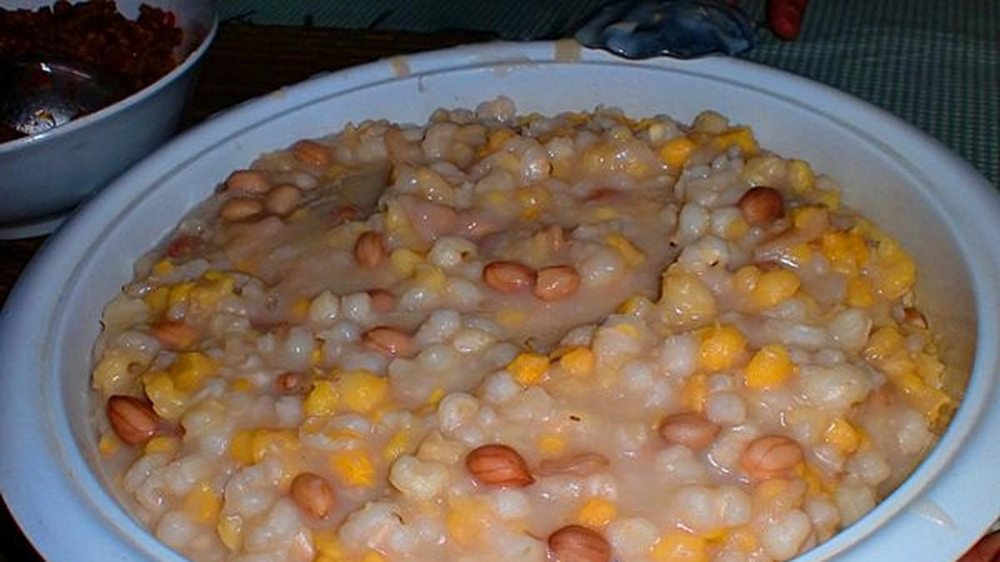
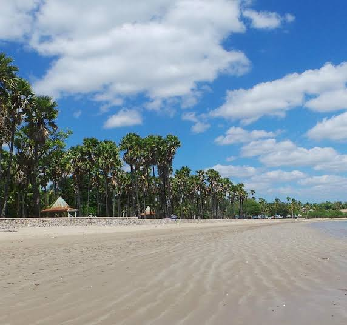

Welcome to WebPro Quiz 1 Portal
An interactive showcase website built for EF234301 Web Programming (Class D). Explore personal profile details, hometown highlights, local delicacies, and tourist spots.
Student Profile
Learn about academic background, technical skills, and university journey at ITS.
View ProfileKupang Delicacies
Discover signature local foods like Se'i, Jagung Bose, and traditional flavors.
Explore FoodTourist Attractions
Explore scenic beaches, crystal caves, and cultural landmarks of East Nusa Tenggara.
View AttractionsGrandira Haidee Alexandro Letik
NRP. 5025251226
Informatics EngineeringAbout Me
Hello! I am an undergraduate student majoring in Informatics Engineering at Institut Teknologi Sepuluh Nopember (ITS), Surabaya. I have a strong passion for software engineering, web development, and creating clean, user-centric web applications.
This static website is created as part of Quiz 1 for the Web Programming course (EF234301), demonstrating vanilla JavaScript client-side routing, and modular UI architecture.
Technical Skills
Kupang, East Nusa Tenggara
Kupang is a port city and the capital of the province of East Nusa Tenggara, Indonesia, located on the island of Timor. Known as the "City of Coral," Kupang serves as the primary economic, political, and cultural hub of the Lesser Sunda Islands.
The city boasts a rich blend of cultural heritage influenced by Portuguese and Dutch colonial histories, paired with native Timorese traditions. With its warm tropical climate, stunning coastal panoramas, and friendly local communities, Kupang offers a unique window into eastern Indonesian life.
Population
~450,000 residents
Climate
Tropical Savanna
Culinary Highlights of Kupang
Traditional flavors and authentic dishes you must try when visiting Kupang.
Se'i (Smoked Meat)
Se'i is Kupang's most famous culinary export. It is thinly sliced pork or beef, smoked over special wood embers (kusambi wood) and served with spicy lu'at chili sauce and cassava leaves.

Jagung Bose
A hearty corn porridge made from mashed white corn cooked with red beans, green beans, and coconut milk. It is traditionally consumed as a staple food alternative to rice in Timor.
Ketan Katjang / Local Snacks
Savory glutinous rice served with sweet peanut paste or traditional pastries flavored with coconut sugar and local spices, perfect for accompanying afternoon coffee or tea.
Tourist Attractions in Kupang
Explore pristine beaches, crystal-clear subterranean caves, and cultural spots.

Lasiana Beach
Famous for its iconic lontar palm trees lining the white sandy shores, calm blue waters, and magnificent sunset views located about 12 km east of Kupang city.
Crystal Cave (Gua Kristal)
A stunning subterranean cave featuring crystal-clear freshwater pool illuminated by shafts of sunlight filtering through limestone openings. Perfect for swimming and exploration.